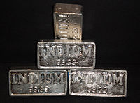

Numero atomico: 49
Massa atomica: 114,8
Temperatura di fusione (°C): 157
Temperatura di ebollizione (°C): 2072
Energia di prima ionizzazione (kj/mol): 558
Elettronegatività (secondo Pauling): 1,78
Densità: 7,31
Numeri di ossidazione: +3
Configurazione elettronica: 1s2, 2s2, 2p6, 3s2, 3p6, 3d10, 4s2, 4p6, 4d10, 5s2 5p1
Maggiori Informazioni